Scheduling
Online, by phone or at the front desk. Free slots come from the real doctor schedule and theatre availability.
Software for healthcare providers
Appointments and doctors, laboratory, surgical unit, home visits, stock, equipment, quality and finance — with fiscal receipts and national e-health export. What is usually bought as three separate programs and held together by one spreadsheet.
Thirty minutes, on your own data or on a demo database.
The problem
Appointments in one program, the laboratory in another, finance in a spreadsheet and stock in a notebook. Each does its part, but nothing joins up on its own.
They will settle up when they collect the results. They come back three weeks later, different shift, and nobody knows what is still owed — or whether anything is.
A patient calls to ask whether the report is ready. Nobody knows if it was sent, to whom, or when — so it goes out twice, or never.
At month end someone adds it up in a spreadsheet, estimating what went on materials and what the doctor is owed. It never matches what everyone assumed.
What it covers
Every workstation sees what it needs, and nothing is entered twice. A small practice uses the first few; a clinic with a laboratory and a theatre uses all of them.
Online, by phone or at the front desk. Free slots come from the real doctor schedule and theatre availability.
Chart, findings, therapy and follow-up. The report comes out as a PDF with letterhead, stamp and signature.
Test catalogue, sample intake, results with reference ranges, and a finished PDF report.
Theatre scheduling, with anaesthetist clearance required before a patient is admitted.
Field orders, technician dispatch, materials issued from stock, and call-out settlement.
Part payments, cash and card on the same invoice, discounts, and debt tracked over years. Money never passes through the system — the clinic takes payment at its own till and the system keeps the record.
Inventory and goods receipt, with automatic deduction on every service — and the name of who took it out.
Revenue by source, earnings by doctor, fixed costs, and break-even per service.
Service and calibration with due dates, depreciation, and return per device.
Incidents and corrective actions, laboratory quality control. The log cannot be deleted — auditors ask for it.
Call log, missed calls, how many calls turn into appointments, and the waiting list.
What each channel brings in and what one new patient costs — from actual revenue, not estimates.
Patients see their appointments and results, download the PDF, and book themselves — with two-factor sign-in.
Alerts in one place and a morning report: what stalled yesterday and what needs a decision today.
Suppliers, orders, and the make-or-buy sum for whether to run a test in house or send it out.
Answers from your own data — services, doctors, appointments, the patient's own report. When nothing covers the question it says so and points to a human. It does not generate sentences and calls no outside service: it runs on your server.
Why MAAT
Correct figures and screens that agree are an obligation, not a selling point. Here is where the difference actually is.
Scheduling, charts, laboratory, surgical unit, home visits, stock and finance. The same ground is usually covered by three programs that do not speak to each other, so data gets retyped by hand.
Field order, technician dispatch, materials taken off stock, and call-out settlement. Clinics that visit patients at home usually keep this separately, on paper.
Part cash, part card, the rest when the patient collects their results. Discounts, referrers, debt across years. The laboratory bills on its own, including for patients who never saw a doctor.
You write to the person who writes the code. No ticket queue, no waiting for the next release — what your clinic needs done differently gets done differently.
Integrations and compliance
Fiscal receipts, national e-health export, insurance checks, laboratory analysers. All of it is built and working — the readiness status is stated plainly below.
Fiscal receipts and e-invoices for corporate clients, with a record of what has been fiscalised and what has not.
Data export in FHIR format, which national systems and other providers can read.
Coverage check before the appointment, so nothing is charged that the insurer would have paid.
Results arrive from the analyser (ASTM) straight into the report — no retyping, no typing errors.
STATUS · All four connections are built and run in sandbox mode. Going live is configuration — endpoint, key and certificate — not a rewrite. If configuration is missing, the system will not quietly fall back to simulation: it raises an error, so an invoice is never shown as fiscalised when it is not.
Data and security
These are the first questions any provider asks. Plain answers.
The system is installed on your server and your domain, and stays there. We do not hold your database or a copy of your data. You make the backups and you keep them.
Personal and medical fields are stored encrypted. Anyone who gets hold of the database alone gets no names, no diagnoses and no phone numbers.
Every chart opened leaves a record: who, what and when. Patient reviews are visible to management only — not to doctors, not to the front desk.
UPDATES · Over 470 automated checks run before any change ships. That does not mean bugs do not exist — it means work done for one clinic does not break what already works at another.
Screens
Screens from a running system — with no real patient data.
The screenshots carry the provider's name, not ours: the system is installed under the clinic's own mark, on its own server and at its own address.
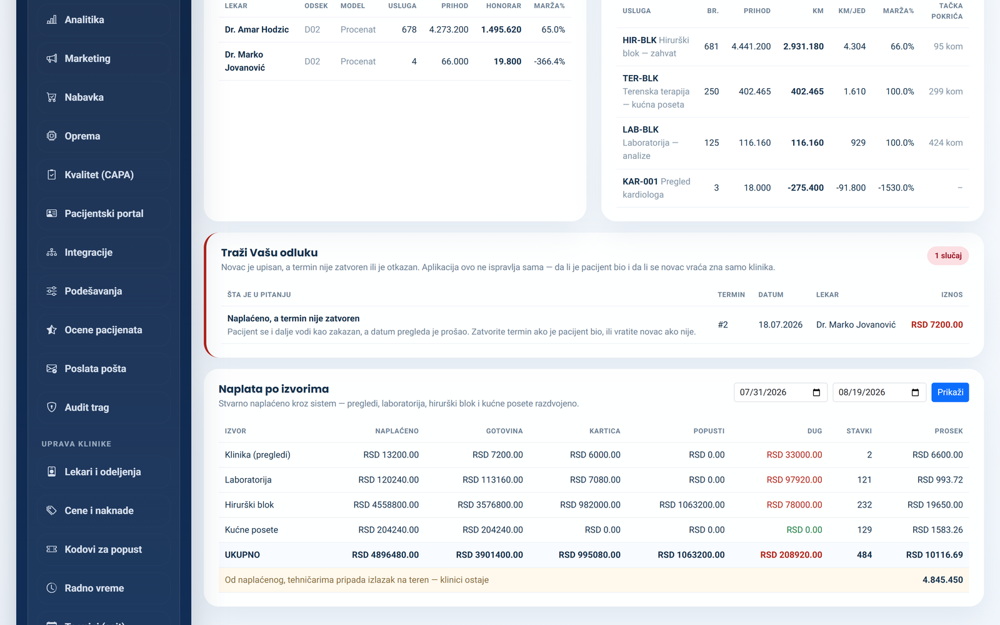
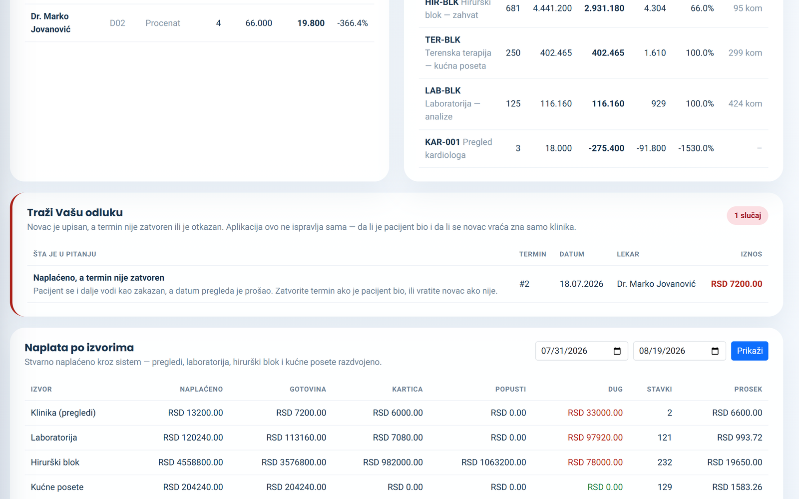
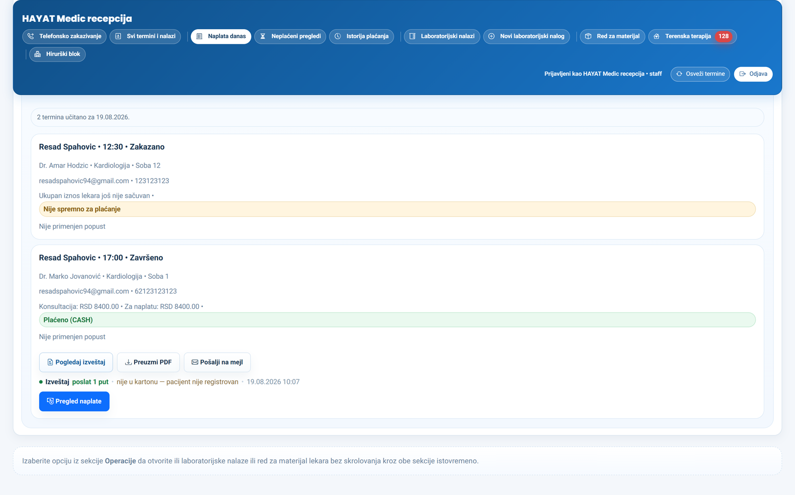
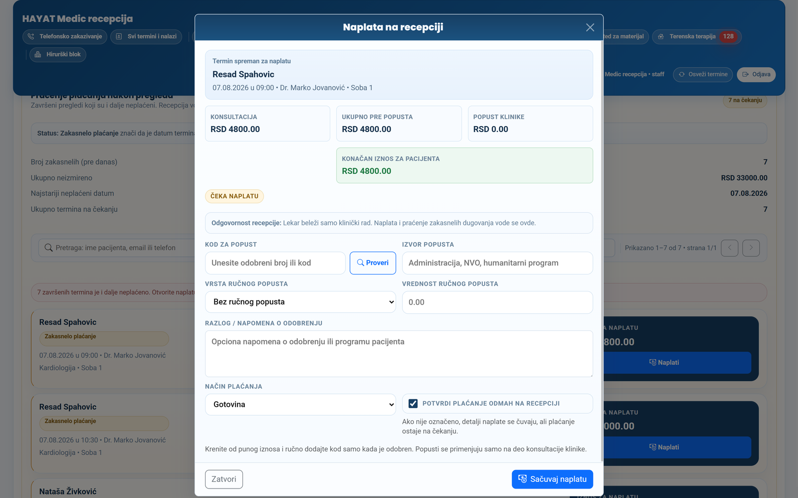
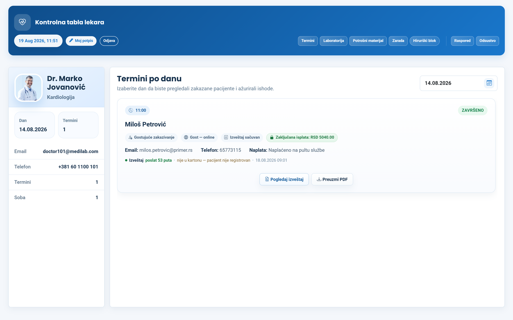
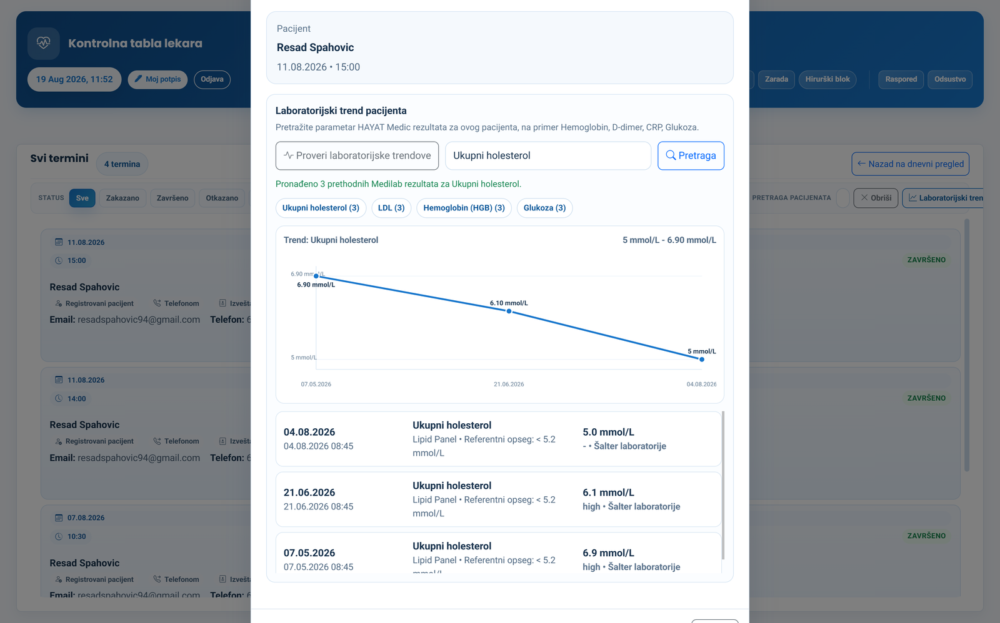
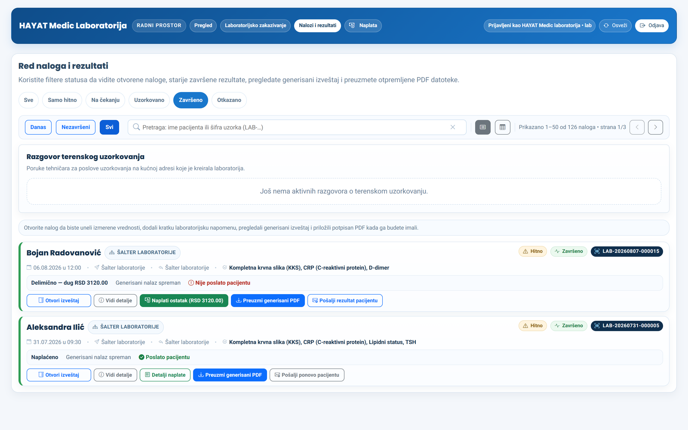
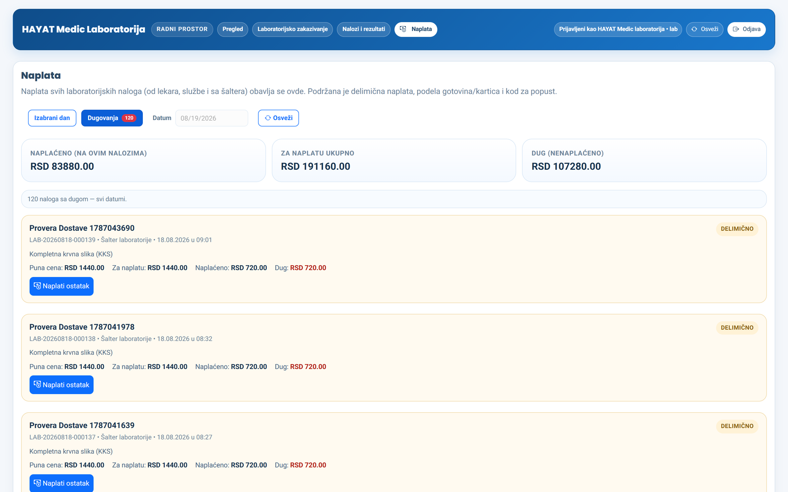
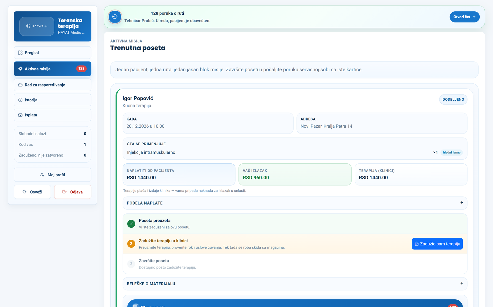
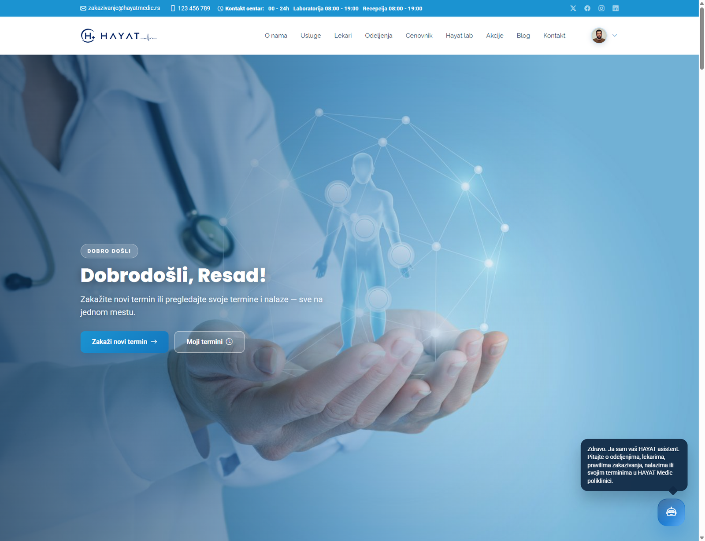
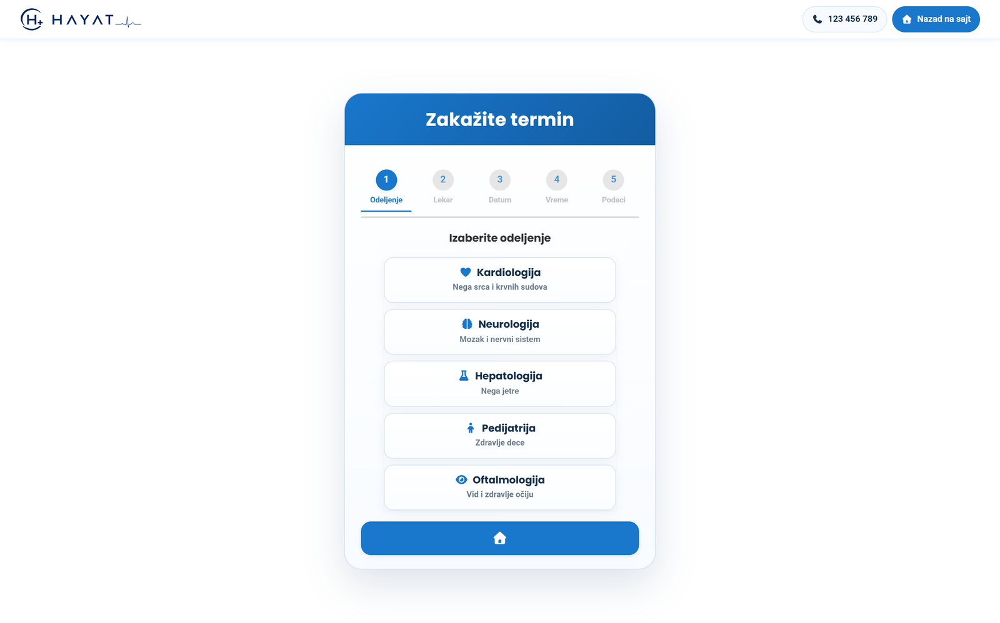
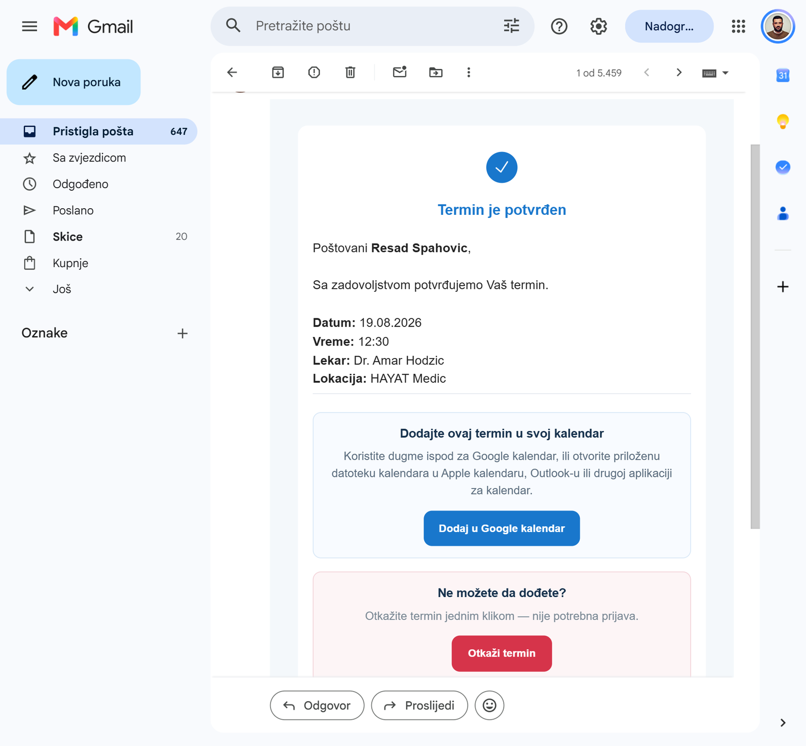
How we charge
No percentage of your revenue and no hidden per-transaction fees. You know what you pay in advance, however many patients you see.
A licence per practice, billed monthly or annually. The price depends on which modules you use, not on how much you earned.
We take no share of your income and charge nothing per appointment, per report or per invoice. More work for you does not mean a bigger bill from us.
Patients pay you, at your own till and your own card terminal. The system only keeps the record of who paid what, how and when. We never touch your money or your bank account.
Contact
The walkthrough takes half an hour. If you like, we import your service list and price list first, so you are looking at your own figures rather than a demo.